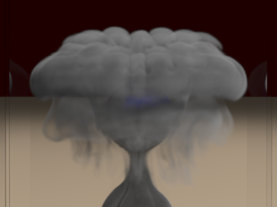

|

|
|
Abstract:
Momentum conservation has long been used as a design principle for solid simulation (e.g. collisions between rigid bodies, mass-spring elastic and damping forces, etc.), yet it has not been widely used for fluid simulation. In fact, semi-Lagrangian advection does not conserve momentum, but is still regularly used as a bread and butter method for fluid simulation. In this paper, we propose a modification to the semi-Lagrangian method in order to make it fully conserve momentum. While methods of this type have been proposed earlier in the computational physics literature, they are not necessarily appropriate for coarse grids, large time steps or inviscid flows, all of which are common in graphics applications. In addition, we show that the commonly used vorticity confinement turbulence model can be modified to exactly conserve momentum as well. We provide a number of examples that illustrate the benefits of this new approach, both in conserving fluid momentum and passively advected scalars such as smoke density. In particular, we show that our new method is amenable to efficient smoke simulation with one time step per frame, whereas the traditional non-conservative semi-Lagrangian method experiences serious artifacts when run with these large time steps, especially when object interaction is considered.
|

![[PHOTO]](../../images/knight_small.png)